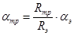
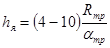
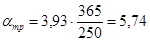
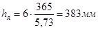

Министерство монтажных и специальных
строительных работ СССР
УТВЕРЖДАЮ:
Заместитель министра
монтажных и специальных
строительных работ СССР
К.К. Липодат
10 декабря 1984 г.
ПРОЕКТИРОВАНИЕ И УСТРОЙСТВО
НАБИВНЫХ СВАЙ
ПО ВИБРАЦИОННОЙ ТЕХНОЛОГИИ
ВСН 309-84
МИНМОНТАЖСПЕЦСТРОЙ СССР
СОГЛАСОВАНО
Госстроем 12 сентября 1984 г.
письмо № ДП 4537-1
Москва - 1985
СОДЕРЖАНИЕ
Нормы разработаны Всесоюзным научно-исследовательским институтом гидромеханизации, санитарно-технических и специальных строительных работ (ВНИИГС) совместно с Государственным институтом по проектированию оснований и фундаментов (фундаментпроект) Минмонтажспецстроя СССР для применения при проектировании и производстве работ по возведению фундаментов из набивных свай, изготовляемых по вибрационной технологии с использованием различных видов вибрационного оборудования (серийно выпускаемого для производства свайных работ и специального назначения для изготовления набивных свай).
Нормы разработаны на основе лабораторных исследований и производственного опыта формования набивных свай с помощью вибрационного оборудования, а также результатов статических испытаний свай при строительстве различных зданий и сооружений в районах средней полосы и юга СССР.
Составители: доктор техн. наук М.Г. Цейтлин, кандидаты техн. наук Н.А. Маковская и Б.Б. Рубин, инж. В.Е. Трофимов (ВНИИГС), инженеры Г.М. Лешин и И.А. Матяшевич (Фундаментпроект).
|
Министерство монтажных и специальных строительных работ СССР (Минмонтажспецстрой СССР) |
Ведомственные строительные нормы |
ВСН 309-84 |
|
Минмонтажспецстрой СССР |
||
|
Проектирование и устройство набивных свай по вибрационной технологии |
Взамен ВСН 309-73ММСС СССР |
Нормы распространяются на проектирование и строительство фундаментов из набивных свай, изготовляемых по вибрационной технологии, для зданий и сооружений с расчетной нагрузкой на фундамент более 1000 кН, зданий с несущими стенами с расчетной нагрузкой на фундамент более 400 кН/м.
Нормы не распространяются на районы вечномерзлых грунтов, площадки с горными выработками, оползневые и карстовые районы.
1.1. Набивные сваи, изготовляемые по вибрационной технологии, следует применять в рыхлых и средней плотности песчаных грунтах независимо от влажности и зернового состава, в пылевато-глинистых грунтах, в том числе лессовых, полутвердой, туго- и мягкопластичной консистенции, а также при прорезании указанных грунтов и опирании свай на плотные песчаные, твердые пылевато-глинистые, крупнообломочные, полускальные и скальные грунты.
1.2. Для изготовления набивных свай следует применять специализированные виброустановки, виброгрейферы, свайные вибропогружатели (см. приложение 1 настоящих норм).
1.3. По способу изготовления набивные сваи подразделяются на следующие виды:
изготовляемые без обсадных труб:
а) без выемки грунта;
б) с выемкой грунта;
изготовляемые с извлекаемыми обсадными трубами:
а) без выемки грунта;
б) с выемкой грунта.
|
Внесены Всесоюзным научно-исследовательским институтом гидромеханизации, санитарно-технических и специальных, строительных работ (ВНИИГС) |
Утверждены Минмонтажспецстроем СССР 10 декабря 1984 г. |
Срок введения в действие 1 января 1986 г. |
1.4. В проектной документации каждая свая должна маркироваться. Марка сваи состоит из букв, означающих способ изготовления сваи, цифр после букв, означающих диаметр сваи в сантиметрах и цифр после тире, означающих длину сваи в метрах.
Например: СВВ-38-10 - свая, изготовляемая по вибрационной технологии без обсадных труб с выемкой грунта диаметром 38 см длиной 10 м; СВОВ53-12 - свая, изготовляемая по вибрационной технологии с извлекаемыми обсадными трубами, с выемкой грунта, диаметром 53 см, длиной 12 м.
2.1. Проектирование свайных фундаментов из свай, изготовляемых по вибрационной технологии, следует проводить на основании исходных данных, отвечающих требованиям СН 202-81 и СНиП II-17-77. Кроме того, в состав исходных данных должны включаться сведения о допустимых деформациях и состоянии зданий и сооружений, расположенных вблизи проектируемого объекта, если строительство осуществляется при условиях, указанных в разделе 5 настоящих норм, а также сведения о наличии вибрационного оборудования у строительной организации.
2.2. Проектирование фундаментов из набивных свай, изготовляемых по вибрационной технологии, должно осуществляться в такой последовательности:
сбор и изучение исходных данных;
предварительный выбор типов свай, "несущего слоя" и определение отметок нижних концов свай;
предварительное назначение глубины заложения ростверков, определение размеров свай и расчетных нагрузок на них;
технико-экономическое обоснование принимаемого варианта фундамента;
расчет количества свай под несущие конструкции;
расчет и проектирование ростверков;
уточнение отметок голов сваи и проектирование свайного поля;
разработка рабочих чертежей фундаментов и составление смет;
составление программы по наблюдению за деформациями и колебаниями существующих зданий при строительстве вблизи них;
подготовка данных для разработки проекта производства работ.
2.3. Изыскания для проектирования фундаментов из набивных свай, изготовляемых по вибрационной технологии, должны проводиться в соответствии с указаниями СНиП II-9-78 и СНиП II-17-77.
2.3.1. Изысканиями должны быть дополнительно установлены влияние вибраций на снижение прочностных свойств грунтов и прочность существующих сооружений, расположенных вблизи проектируемого объекта, возможность уплотнения грунтов основания, коэффициент уплотнения для песчаных грунтов.
При наличии тиксотропных грунтов следует определять их чувствительность к нарушению структурных связей, т.е. степень снижения прочностных и деформационных свойств грунтов и несущей способности свай следствие нарушения структурных связей грунтов при вибрации, а также время восстановления структурных связей и степень возрастания прочности грунта.
2.3.2. Техническое задание на изыскания должно составляться проектной организацией - автором проекта фундаментов, согласовываться генеральной проектной организацией и через заказчика передаваться изыскательской организации. В техническом задании указываются предполагаемые виды свай, их размеры и влияние технологии погружения свай на окружающую среду.
2.4. На стадии изысканий или в начальный период строительства должны предусматриваться обязательные испытания свай статической нагрузкой в следующих случаях:
при количестве свай на объекте более 1000;
при сваях длиной более 15 м;
при слабых грунтах мощностью более 10 м;
при прорезке грунтов типа 2 по просадочности;
для уникальных зданий и сооружений с нагрузкой на фундаменты более 10000 кН.
Испытания свай статической нагрузкой должны проводиться в соответствии с требованиями ГОСТ 5686-78*.
2.4.1. Испытания свай статической нагрузкой в грунтах типа 1 по просадочности должны проводиться с локальным замачиванием грунтов, либо со снятием трения по боковой поверхности сваи в пределах просадочной толщи, в грунтах типа 2 по просадочности - с длительным площадным замачиванием грунтов до проявления просадок.
2.4.2. При испытаниях свай статической нагрузкой в засоленных грунтах следует устанавливать возможность уменьшения несущей способности в результате выщелачивания солей при замачивании грунтов.
При испытаниях свай статической нагрузкой в набухающих грунтах следует предусматривать определение значений подъема и набухания грунтов при замачивании в соответствии со СНиП 2.02.01-83, п. 4.
2.5. Расчет фундаментов со сваями, изготовляемыми по вибрационной технологии, следует производить по предельным состояниям двух групп. По предельным состояниям первой группы определяется несущая способность свай и ростверков, устойчивость свай и фундаментов.
По предельным состояниям второй группы рассчитываются осадки оснований свайных фундаментов, горизонтальные перемещения свай и фундаментов, образование или раскрытие трещин в железобетонных сваях и ростверках.
2.5.1. Номенклатура свай в зависимости от грунтовых условий и способа образования скважин принимается по табл. 1.
2.5.2. На стадии проектирования допускается определять несущую способность свай в зависимости от их типа одним из следующих способов с последующим контролем испытаниями статическими нагрузками:
Таблица 1
|
Диаметр, м |
Длина, м |
Вид грунта |
Способ образования скважин |
|
|
СВО |
325-377 |
3-15 |
Неустойчивые песчаные и пылевато-глинистые грунты |
С извлекаемыми обсадными трубами без выемки грунта |
|
426 |
5-15 |
|||
|
530 |
5-12 |
С извлекаемыми обсадными трубами и с выемкой грунта |
||
|
СВОВ |
630 |
5-15 |
||
|
720 |
8-14 |
|||
|
1020 |
10-20 |
|||
|
СВ |
426 |
5-15 |
Устойчивые пылевато-глинистые грунты* |
Без обсадных труб и выемки грунта |
|
377 |
3-15 |
|||
|
СВВ |
380 |
3-15 |
Без обсадных труб, с выемкой грунта |
|
|
530 (500) |
5-20 |
|||
|
800 |
8-25 |
|||
|
1000 |
10-25 |
*К устойчивым грунтам относятся грунты, обеспечивающие сохранность стенок скважины без вывалов и осыпей грунта на всех стадиях производства работ.
для свай, изготовляемых без выемки грунта, как для забивных (при пробивке скважин) или вибропогружаемых свай по формуле (7) и таблицам 1-3 СНиП II-17-77;
для свай, изготовляемых с выемкой грунта, как для буронабивных свай по формуле (10) СНиП II-17-77, при этом расчетные сопротивления в кН/м2 под нижним концом набивных свай в глинистых грунтах следует принимать по табл. 2 настоящих норм, в песчаных грунтах - по табл. 1 СНиП II-17-77.
2.5.3. Расчет свай, изготовляемых по вибрационной технологии на горизонтальную нагрузку, должен производиться по приложению 1 к СНиП II-17-77. При этом коэффициент пропорциональности К принимается для свай, устраиваемых без выемки грунта, как для забивных свай, а для свай, устраиваемых с выемкой грунта, как для буронабивных свай.
2.5.4. Осадка фундамента в виде куста из свай, изготовляемых по вибрационной технологии, рассчитывается в соответствии с разделом СНиП II-17-77. Осадку ленточного фундамента из таких же свай допускается рассчитывать по разделу 7 "Руководства по проектированию свайных фундаментов". - М., 1980.
Фундаменты из свайных полей размерами более 10´10 м рассчитываются по схеме линейно-деформируемого слоя согласно СНиП 2.02.01-83. Размеры условного фундамента в плане принимаются равными размерам плитного ростверка, а расчет производится по среднему давлению на основание в плоскости подошвы ростверка.
Таблица 2
|
Расчетное сопротивление для глинистых грунтов (кН/м2) при показателе консистенции IL |
||||||
|
0 |
0,1 |
0,2 |
0,3 |
0,4 |
0,5 |
|
|
3 |
1600 |
1400 |
1200 |
1000 |
800 |
600 |
|
4 |
1800 |
1600 |
1300 |
1100 |
900 |
700 |
|
5 |
2000 |
1700 |
1400 |
1200 |
1000 |
800 |
|
7 |
2400 |
2000 |
1600 |
1300 |
1100 |
900 |
|
10 |
3000 |
2300 |
1800 |
1500 |
1200 |
1000 |
|
15 |
3800 |
3000 |
2400 |
2000 |
1500 |
1200 |
|
20 |
4600 |
3700 |
3000 |
2500 |
1800 |
1400 |
|
25 |
5400 |
4400 |
3600 |
3000 |
2100 |
1600 |
|
30 |
6200 |
5200 |
4300 |
3500 |
2400 |
1800 |
Расчет железобетонных ростверков производится в зависимости от их конструктивной схемы по приложениям 9, 10 и 11 к "Руководству по проектированию свайных фундаментов". - М. 1980.
2.6. Сваи в плане следует располагать:
в один ряд под несущими стенами;
в виде односвайных опор под колонны с расчетной нагрузкой до 4000 кН;
кустами из 2-9 свай под несущие колонны;
свайным полем под силосные корпуса, промышленные трубы и другие подобные сооружения.
2.6.1. Минимальное расстояние между сваями должно приниматься 3d, где d - диаметр сваи, а для свай диаметром более 60 см - 100 см в свету.
Максимальное расстояние между сваями определяется расчетом и конструктивными требованиями.
Неполное использование расчетной нагрузки, допускаемой на сваю по грунту, не должно превышать 15 %, перегрузка свай от постоянных и длительных нагрузок - но более 5 %, кратковременных - не более 20 %.
2.6.2. Выбор вида свай следует производить в зависимости от грунтовых условий площадки, воспринимаемых сваями нагрузок, и вибрационного оборудования, имеющегося у строительной организации.
При выборе вида свай предпочтение следует отдавать сваям, изготовляемым без выемки грунта.
В маловлажных устойчивых пылевато-глинистых грунтах следует, как правило, применять сваи, изготовляемые без обсадных труб, а в песчаных и пылевато-глинистых грунтах с показателем консистенции IL = 0,5 и более - сваи, изготовляемые c извлекаемыми обсадными трубами.
2.7. Набивные сваи, изготовляемые по вибрационной технологии, проектируются из бетонных смесей с осадкой конуса (ОНК) 0-6 см. Марка бетона должна быть не менее М 200. Она должна назначаться из условия, чтобы прочность материала свай была не ниже расчетной нагрузки, допускаемой на сваю по грунту. Марку бетона свай по морозостойкости и водонепроницаемости следует принимать в соответствии с рекомендациями СНиП 2.03.01-84.
2.8. Набивные сваи армируются каркасами:
в верхней части для сопряжения с ростверком;
на длину, определяемую расчетом, с учетом анкеровки арматуры;
на всю длину сваи.
Продольное армирование сваи определяется расчетом на совместное действие вертикальных, горизонтальных и моментных нагрузок в соответствии с приложением 1 к СНиП II-17-77.
Сваи конструктивно армируются на всю длину при отношении длины к диаметру сваи более 20, а также в пучинистых и слабых водонасыщенных грунтах, в агрессивной грунтовой среде и в сейсмических районах.
Допускается комбинированное армирование свай: в верхней части ствола - по расчету, в нижней - конструктивно.
Минимальный диаметр продольной арматуры - 10 мм, минимальное количество стержней при диаметре сваи до 400 мм - 4 шт., при диаметре сваи 400 мм и более - 6 шт.
Защитный слой бетона в армированных сваях следует принимать не менее 70 мм.
Длина арматурных каркасов должна назначаться из условия возможности их транспортировки и установки в скважину, но не более 12 м. При установке в скважину 2-3 каркасов их сварку следует производить после опускания в скважину нижнего каркаса и временного закрепления его над устьем скважины.
2.9. Сопряжение свай данной конструкции с ростверком может быть жестким или шарнирным и назначается в соответствии с рекомендациями "Руководства по проектированию свайных фундаментов". - М.: 1980 г.
2.9.1. Ростверки в зависимости от типа несущих конструкций и формы расположения свай могут быть ленточными, кустовыми отдельно стоящими, плитными, а также монолитными или сборными. Размеры ростверков по кустам свай следует принимать кратными 30 см в плане и 15 см по высоте, что обеспечивает применение инвентарной опалубки с модулем 30 см.
2.9.2. Сборные ростверки допускается применять в случаях, когда на сваю не действует выдергивающая нагрузка, а горизонтальная нагрузка на сваю не превышает 5 % вертикальной нагрузки.
2.10. В грунтах 2 типа по просадочности длину свай следует назначать из условия полной прорезки просадочной толщи и опирания на непросадочные грунты с модулем деформации Е > 20 МПа.
Допускается заглубление свай в грунты с модулем деформации Е = 5 МПа, если с учётом дополнительных нагрузок от сил негативного трения обеспечиваются несущая способность свай, абсолютные и относительные осадки.
2.11. При проектировании фундаментов из свай, изготовляемых по вибрационной технологии, в сейсмических районах, в просадочных и набухающих грунтах должны предусматриваться дополнительные конструктивные мероприятия в соответствии с действующими нормативными документами.
ППР должен составляться согласно СНиП по организации строительного производства и дополнительно содержать:
план свайного поля со схемой движения механизмов и указанием последовательности производства работ;
инженерно-геологические разрезы по площадке с указаниями отметок нижних концов свай, категории грунтов по буримости, технологии проходки скважин;
технологические требования к выполнению опытных свай;
перечень оборудования и вспомогательной технологической оснастки, применяемых для устройства набивных свай;
техническую характеристику грузоподъемного оборудования;
указание на строительной площадке места подводки или средств доставки воды, а также места ее отвода в отстойник для промывки внутренней полости обсадных труб от остатков бетонной смеси;
указания по организации наблюдения за вибрациями ближайших сооружений в соответствии с программой, разработанной проектной организацией на стадии рабочей документации.
3.2. ППР должны предусматриваться мероприятия, обеспечивающие изготовление свай в точном соответствии с рабочей документацией. При этом отклонения от проектных размеров не должны превышать:
а) от проектного положения в плане:
для односвайных фундаментов и поперек ряда для однорядных фундаментов ±8 см;
для однорядных фундаментов вдоль ряда и в кустах - 0,3 d; (d - диаметр свай), но не более 15 см;
б) от проектного положения по вертикали 0,01 при диаметре до 50 см включительно, 0,02 при диаметре более 50 см;
в) по диаметру скважин +5 см;
г) по глубине скважин ±10 см;
д) по толщине защитного слоя +1 см.
При длине арматурного каркаса меньше длины сваи для предотвращения погружения каркаса в бетон его необходимо закрепить в проектном положении.
3.4. Работы по изготовлению набивных свай следует выполнять в соответствии со СНиП 3.02.01-83, п. 8. В том случае, если дно котлована имеет разные отметки, котлован отрывают на глубину, соответствующую наивысшей отметке, с которой производится изготовление набивных свай. При этом свая бетонируется до проектной отметки ее верха. Затем остальная часть скважины заполняется грунтом. Отрывают котлован до наинизшей проектной отметки не ранее чем через 10 дней после изготовления свай.
3.5. До начала работ по изготовлению набивных свай необходимо выполнить ряд подготовительных мероприятий, которые включают: планировку строительной площадки, устройство дорог и подъездов, подводку сети электроснабжения, разбивку и закрепление осей набивных свай; проверку исправности и комплектности оборудования; доставку на площадку оборудования и механизмов, их расстановку и подключение; оборудование бытовых помещений.
3.5.1. При работе с вибрационным оборудованием следует уделить особое внимание планировке строительной площадки; для нормальной работы грузоподъемного средства необходимо обеспечить предельный уклон строительной площадки к горизонту не более 3°.
3.5.2. Перед началом работ комплект оснастки и оборудования необходимо подвергнуть техническому осмотру; а также проверить состояние грузозахватных элементов крана, состояние приборов безопасности и тормозов.
3.5.3. В непосредственной близости от места изготовления свай должны быть установлены подкладки, на которые укладывают вибрационное оборудование.
3.5.4. Выбор источника электроснабжения, кабеля, пусковой аппаратуры, а также способа подключения вибрационного оборудования к источнику электроснабжения должны осуществляться в строгом соответствии с "Правилами технической эксплуатации электроустановок потребителей" Госэнергонадзора Минэнерго СССР.
3.6. Выбор вибрационного оборудования следует производить по табл. 3 в зависимости от грунтовых условий и проектных размеров свай.
3.7. В качестве грузоподъемного оборудования для работ по устройству набивных свай вибрационными машинами следует использовать копры и стреловые самоходные краны с соответствующей грузоподъемностью, высотой подъема крюка и канатоемкостью лебедки, а также станки ударно-канатного бурения.
3.7.1. При работе с виброустановками типа ПВН и вибропогружателем ВП-1 грузоподъемность крана на рабочем вылете должна быть не менее удвоенной массы вибросистемы (вибропогружатель, амортизатор, наголовники, обсадная труба). Для работы с виброгрейферами ПВ-380 и ПВ-530 грузоподъемность крана на рабочем вылете стрелы или копра должна быть не менее 8 т, а с виброгрейфером ПВ-820 и вибропогружателем типа В-401 - не менее 16 т.
3.7.2. При использовании вибромолота ВВС-1 в качестве грузоподъемного оборудования применяются станки ударно-канатного бурения УГБ-ЗУК (УКС-22) и УГБ-4УК (УКС-30).
Высота подъема крюка грузоподъемного средства на рабочем вылете назначается равной суммарной высоте системы, состоящей из амортизатора, стропа, вибрационной установки и секции обсадной трубы, плюс 1 м.
3.7.3. При выборе грузоподъемного средства для работы с виброгрейфером необходимо учитывать, что его подвешивают на крюк грузоподъемного механизма с помощью стропа длиной не менее 1 м; при разгрузке в отвал виброгрейфер следует поднимать над уровнем грунта площадки не менее чем на 1 м;
при разгрузке в автомобильный транспорт нижняя кромка грунтозаборника должна находиться выше борта автомобиля на 0,3-0,5 м.
Таблица 3
|
Свая |
Тип оборудования* |
Технология изготовления свай |
|||
|
диаметр, мм |
Длина, м |
Способ образования скважин |
Способ бетонирования |
||
|
Неустойчивые песчаные и глинистые грунты |
325-377 |
3-10 |
В-401 |
С извлекаемыми обсадными трубами без выемки грунта |
Насухо малоподвижными или умеренно жесткими бетонными смесями, уплотняемыми при извлечении обсадных труб |
|
3-12 |
ВП-1 |
||||
|
3-15 |
ПВН-1 |
||||
|
5-10 |
|||||
|
426 |
5-15 |
||||
|
530 |
5-12 |
ПВН-1 |
|||
|
630 |
5-15 |
БВС-1 |
С извлекаемыми обсадными трубами, и выемкой грунта |
То же, или способом ВП с вибрированием |
|
|
5-20 |
ВП-1 |
||||
|
720-1020 |
8-14 |
ВП-1 |
|||
|
10-20 |
ПВН-2 |
||||
|
Устойчивые глинистые грунты |
426 |
5-15 |
Без выемки грунта |
Насухо малоподвижными или умеренно жесткими бетонными смесями с послойным уплотнением виброгрейфером или глубинным вибратором |
|
|
377 |
3-15 |
ПВН-1 |
|||
|
380-600 |
3-15 |
ПВ-380 |
Без обсадных труб, с выемкой грунта |
||
|
530 (800) |
5-20 |
ПВ-530 ПВ-500 |
|||
|
820-1220 |
8-25 |
ПВ-820 |
|||
*См. приложения 1 и 2 настоящих норм.
Канатоемкость лебедки крана должна обеспечивать опускание грунтозаборника виброгрейфера ниже проектной отметки скважины на 1-1,5 м с учетом длины стропа и высоты виброгрейфера.
3.8. Мощность трансформаторной подстанции и подводящей сети должна составлять не менее 50 кВ×А для виброгрейфера ПВ-380 и 100 кВ×А для работы виброгрейферов ПВ-530, ПВ-820 и вибромолота БВС-1, и не менее 200 кВ×А для работы вибрационных установок типа ПВН, вибропогружателей В-401 и ВП-1.
Напряжение питающей сети должно быть не ниже 380 В. Допустимое падение напряжения в сети при работе вибрационного оборудования не должно превышать 10 %.
3.9. Диаметр инвентарных обсадных труб должен соответствовать диаметру изготовляемой набивной сваи.
3.9.1. При изготовлении набивных свай без выемки грунта с помощью виброустановки ПВН-1 или вибропогружателей типа В-401 используются обсадные трубы диаметром 325-530 мм с толщиной стенки не менее 8-10 мм по ГОСТ 8732-78, а также теряемые башмаки.
3.9.2. Диаметры обсадных труб, применяемых при работе с вибромолотом БВС-1 и виброустановками ПВН-2 и ВП-1, выбираются соответственно 325-630 мм с толщиной стенки не менее 7 мм и 720-1020 мм с толщиной стенки не менее 10 мм по ГОСТ 8732-78.
3.10. Работы по проходке скважин под набивные сваи с помощью виброгрейферов должны осуществляться с использованием направляющего устройства. Типоразмер виброгрейфера следует выбирать в зависимости от размеров проходимой скважины. При этом необходимо учитывать, что минимальный диаметр проходимых скважин определяется диаметром вибрационного механизма, равным у виброгрейферов ПВ-380, ПВ-530 и ПВ-820 соответственно 380, 530 и 820 мм.
При подборе виброгрейфера для извлечения грунта из обсадных труб следует учитывать, что диаметр его грунтозаборника должен быть не менее чем на 100 мм меньше внутреннего диаметра обсадной трубы.
Сечение сменных насадок грунтозаборника виброгрейфера должно выбираться в зависимости от размеров и формы грунтозаборника в плане, а также от характеристик грунта в соответствии с приложением 3 настоящих норм.
3.11. Крепление вибровозбудителя к обсадной трубе или грунтозаборнику должно осуществляться с помощью фланцевого соединения, гидравлического или механического наголовника.
3.12. Выбор бетонолитного оборудования следует производить в зависимости от принятого способа бетонирования. При бетонировании необходимо иметь загрузочную воронку, приемную бадью, а при бетонировании скважин без защиты обсадных труб - глубинные вибраторы, укомплектованные соответствующей аппаратурой электропитания.
Смесь следует транспортировать на площадку передвижными автобетоносмесителями или автосамосвалами и загружать ее непосредственно в загрузочную воронку или приемные бадьи. При бетонировании свай методом ВПТ с вибрированием бетонолитное оборудование следует выбирать в соответствии с указаниями СНиП III-15-76.
3.13. Формование оголовка сваи под проектную отметку необходимо производить немедленно по окончании бетонирования сваи, используя инвентарную разборную опалубку, отрезки металлических или железобетонных труб.
3.14. Бетонирование набивных свай в зимнее время следует производить в соответствии с требованиями (СНиП III-15-76).
Изготовление набивных свай с помощью виброгрейферов
4.1. Виброгрейферы для изготовления набивных свай с выемкой грунта без обсадки скважин следует использовать при работе в глинистых грунтах с показателем консистенции 0 < IL > 0,6; лессах и лессовых грунтах, а также при бурении скважин глубиной до 3,0 м в песках со степенью влажности 0,2 < G < 0,5, плотных и средней плотности.
4.2. В основе способа изготовления набивных свай с помощью виброгрейфера лежит типовая схема проходки скважин, приведенная на рис. 1.
Рис. 1. Технологическая схема проходки скважины виброгрейфером:
а - установка направляющего устройства и проходка лидерной скважины; б - извлечение виброгрейфера с грунтом; в - разгрузка; г - снятие и перестановка направляющего устройства; д - углубление скважины
4.2.1. Проходку скважины следует начинать с установки направляющего устройства и проверки его расположения по оси скважины посредством контрольного штыря.
4.2.3. В начальной стадии извлечения виброгрейфера до отрыва грунтового керна скорость подъема грузового крюка должна быть минимальной. При недостаточной грузоподъемности оборудования необходимо включать вращательные колебания, снижающие усилие извлечения виброгрейфера. Для предотвращения заклинивания виброгрейфера при его извлечении машинист должен обращать особое внимание на соблюдение соосности полиспаста и скважины.
В случае заклинивания виброгрейфера его извлечение допускается производить при продольных колебаниях.
4.2.5. После проходки лидерной скважины глубиной 1,5-2,0 м направляющее устройство следует убрать.
Устье скважин от обрушения, как правило, следует предохранять с помощью отрезков обсадной трубы длиной 1,5-2 м, диаметром на 70-100 мм больше диаметра грунтозаборника.
4.2.6. Прохода скважины до проектной отметки продолжают посредством повторения операций, описанных в п. 4.2.2-4.2.4 настоящих норм.
4.2.7. Уплотнение забоя скважины в случае необходимости следует производить с использованием трамбующего днища, которое кропится к грунтозаборнику вместо насадки, при продольных колебаниях циклами по 15-30 с. По окончании уплотнения забоя выполняется осмотр скважины согласно СНиП 3.02.01-83, п. 8.15.
4.2.8. Работы по изготовлению набивных свай должны осуществляться в соответствии с технологической схемой, приведенной на рис. 2.
При опускании арматурного каркаса не должны повреждаться стенки скважины.
4.2.10. Бетонирование свай должно производиться не позднее 8 ч после окончания бурения скважин.
Укладку малоподвижных бетонных смесей в скважину следует осуществлять в соответствии со СНиП III-15-76, п. 4.26-4.27 с послойным уплотнением бетона (высота слоя 1 м) виброгрейфером с трамбующим днищем или с помощью глубинного вибратора.
Изготовление набивных свай с выемкой грунта под защитой обсадных труб
4.3. Изготовление набивных свай с выемкой грунта под защитой инвентарных обсадных труб следует выполнять с использованием установок типа ПВН-2 в комплекте с виброгрейфером. Для погружения обсадных труб также могут быть использованы вибропогружатель ВП-1 и вибромолот БВС-1.
Указанное оборудование следует применять в песчаных грунтах со степенью влажности 0,5 < G < 1 и в глинистых грунтах с показателем консистенции 0,5 <IL < 0,75.
4.4. Работы по изготовлению набивных свай c выемкой грунта, под защитой скважины инвентарными обсадными трубами на всю глубину должны выполняться в соответствии c технологической схемой, приведенной на рис. 3.
4.4.2. При включении установки и постепенном опускании крюка грузоподъемного средства производится погружение обсадной трубы до проектной отметки или до снижения скорости погружения трубы до 0,1 м/мин, что приводит к образованию грунтовой пробки. Если в процессе погружения происходит нарушение вертикальности обсадной трубы, процесс следует приостановить, систему 1-2 раза поднять на высоту 0,5-0,8 м c последующим новым погружением.
Рис. 2. Технологическая схема изготовления набивных свай без обсадки скважин c помощью виброгрейфера:
а - проходка скважины; б - уплотнение забоя; в - бетонирование; г - послойное уплотнение бетонной смеси; д - готовая свая
Рис. 3. Технологическая схема изготовления набивных свай с выемкой грунта под защитой обсадных труб на полную длину сваи:
а - проходка лидерной скважины виброгрейфером; б - погружение обсадной трубы виброустановкой; в - извлечение грунта из обсадной трубы виброгрейфером; г - бетонирование сваи; д - извлечение обсадной трубы с помощью вибрационной установки
4.4.3. В тех случаях, когда верхние слои грунта обеспечивают устойчивость стенок скважины без обсадной трубы, перед погружением обсадной трубы следует осуществлять проходку лидерной скважины виброгрейфером на всю глубину устойчивой зоны (см. рис. 1).
4.4.4. При достижении проектной отметки или существенном снижении скорости погружения обсадной трубы извлечение грунта из ее внутренней полости следует производить виброгрейфером в соответствии с пп. 4.2.2-4.2.4 настоящих норм. При этом совпадение оси грунтозаборника виброгрейфера с осью обсадной трубы является обязательным.
Извлечение грунта из обсадных труб, погруженных установкой ПВН-2, производится через проходное отверстие, предусмотренное в ее конструкции.
При работе с установкой ПВН-2Б вибропогружателем ВП-1 или вибромолотом БВС-1 перед извлечением грунта вибровозбудитель необходимо снять с обсадной трубы. После извлечения грунта вибровозбудитель следует вновь присоединить к обсадной трубе, которая в случае необходимости вновь погружается до проектной отметки или до следующей остановки.
4.4.5. Перед установкой арматурного каркаса следует осмотреть скважину с помощью низковольтной лампы и при необходимости зачистить поверхность обсадной трубы и забой скважины. В том случае, если в забое отсутствует вода, оставшийся разрыхленный грунт выбирается виброгрейфером. При наличии в основании скважины разуплотненного песчаного грунта его необходимо уплотнить в соответствии с п. 4.2.8 настоящих норм, в глинистый грунт следует втрамбовать гравийную или щебеночную смесь (высотой 25-30 см). Если на забое имеется незначительный слой воды (0,5-1,5 м), ее необходимо откачать или в основание скважины уложить тощую бетонную смесь (высотой 25-30 см). Если уровень воды на забое свыше 1,5 м и ее невозможно откачать или удалить иным способом, заполнение оболочки бетонной смесью необходимо производить способом ВПТ с вибрированием в соответствии с требованиями, изложенными в СНиП III-15-76.
Скорость подъема обсадной трубы при включенных электродвигателях виброустановки принимается в пределах 1-2 м/мин. При этом процесс подъема должен происходить без резких рывков и остановок во избежание разрывов сплошности бетона и образования пустот.
В процессе извлечения обсадной трубы необходимо постоянно следить за амортизатором, не допуская полного сжатия его пружин.
Каждому циклу извлечения обсадной трубы должна предшествовать ее вибрация без подъема в течение 1-1,5 мин, т.е. до тех пор, пока на поверхности бетона не появится слой цементного молока.
В тех случаях, когда основная нагрузка на сваю воспринимается боковой поверхностью, извлечение обсадной трубы следует производить с периодическим осаживанием.
Во избежание расслаивания бетонной смеси в оголовке сваи, последние 1,0-1,5 м обсадной трубы должны извлекаться статическим усилием грузоподъемного средства. Весь процесс бетонирования сваи и извлечения обсадной трубы должен производиться до начала срока схватывания бетонной смеси. После извлечения трубы ее полость необходимо промыть водой.
4.5. Работы по изготовлению набивных свай с выемкой грунта под защитой скважины обсадными трубами только в пределах зоны неустойчивых грунтов должны осуществляться по технологической схеме, приведенной на рис. 4.
При изготовлении свай по указанной технологии необходимо учитывать, что диаметр верхней части скважины, изготовляемой под защитой обсадной трубы, должен быть на 80-100 мм больше, чем диаметр нижней части скважины, проходимой виброгрейфером в зоне устойчивых грунтов.
4.5.1. Обсадку скважины в зоне неустойчивых грунтов и выемку грунта из обсадной трубы следует производить в соответствии с требованиями пп. 4.4.1-4.4.3 настоящих норм. Глубина погружения обсадной трубы ниже зоны неустойчивых грунтов должна составлять 1,5-2 м.
4.5.2. Проходка нижней части скважины до проектной отметки в зоне устойчивых грунтов должна осуществляться виброгрейфером в соответствии с требованиями пп. 4.2.2-4.2.4 настоящих норм.
Рис. 4. Технологическая схема изготовления набивных свай с выемкой грунта при защите обсадными трубами верхней части скважины:
а - погружение обсадной трубы; б - извлечение грунта виброгрейфером; в - проходка скважины виброгрейфером в зоне устойчивых грунтов; г - бетонирование сваи; д - извлечение обсадной трубы с помощью вибрационной установки.
4.5.3. Подготовка забоя скважины, установка арматурного каркаса и бетонирование нижней части скважины должны выполняться в соответствии с пп. 4.2.8-4.2.10 настоящих норм. Бетонирование верхней части скважины, находящейся под защитой обсадной трубы, следует производить с учетом требований, изложенных в п. 4.4.6.
Изготовление набивных свай без выемки грунта под защитой обсадных труб
4.6. Набивные сваи без выемки грунта под защитой обсадных труб следует изготовлять с использованием установок типа ПВН-1, вибропогружателей типа В-401 и ВП-1.
Набивные сваи указанного типа изготовляют путем погружения обсадной трубы с теряемым башмаком в песчаные грунты со степенью влажности 0,5 < G < 1 и глинистые - c показателем консистенции 0,5 < IL < 0,75 или путем пробивки скважины трубой с конусным наконечником в песчаных грунтах со степенью влажности G < 0,5 и глинистых - с показателем консистенции 0,25 < IL < 0,5, а также в лессовых грунтах.
Рис. 5. Технологическая схема изготовления набивных свай с теряемым башмаком:
а - погружение обсадной трубы с теряемым башмаком; б - заполнение обсадной трубы бетоном; в - извлечение обсадной трубы с помощью вибрационной установки
4.7. Работы по изготовлению набивных свай без выемки грунта с теряемым башмаком должны выполняться в соответствии с технологической схемой, приведенной на рис. 5.
4.7.1. Присоединение инвентарной трубы к установкам ПВН-1 и вибропогружателям В-401 и ВП-1 осуществляют в горизонтальном положении, а между крюком подвески грузоподъемного средства и виброустановкой размещают пружинный амортизатор. Присоединение вибромолота БВС-1 к трубе осуществляется после ее установки в вертикальное положение. Длина обсадной трубы назначается на 1,0-1,5 м больше проектной глубины сваи.
4.7.2. При устройстве свай с теряемым башмаком в выемку глубиной 30-50 см, образованную по оси сваи, устанавливают теряемый башмак. Перед погружением на его цилиндрическую часть необходимо намотать несколько витков просмоленного каната, исключающего попадание воды в обсадную трубу.
4.7.3. Предварительно собранную вибросистему с помощью грузоподъемного средства следует установить вертикально на теряемый башмак.
При работе с установкой ПВН-1 на начальной стадии обсадную трубу следует погружать в вибрационном режиме. При снижении скорости погружения до 0,1 м/мин дальнейшее погружение обсадной трубы следует производить в ударно-вибрационном режиме.
Рис. 6. Технологическая схема изготовления набивных свай пробивкой скважины обсадной трубой:
а - проходка лидерной скважины виброгрейфером; б - погружение обсадной трубы, закрытой снизу; в - извлечение обсадной трубы с помощью вибрационной установки; г - бетонирование сваи
4.7.5. После погружения обсадной трубы на проектную отметку и отсоединения вибропогружателя во внутреннюю полость трубы следует установить арматурный каркас в соответствии с п. 3.3 настоящих норм.
4.7.6. В обсадную трубу на всю высоту должна быть уложена малоподвижная бетонная смесь, после чего трубу следует извлечь с помощью вибрационной установки (при этом теряется башмак). Процесс извлечения следует осуществлять в соответствии с п. 4.4.6 настоящих норм.
4.8. Изготовление набивных свай без выемки грунта методом пробивки скважины производится в соответствии с технологической схемой, приведенной на рис. 6.
4.8.2. Погружение обсадной трубы должно осуществляться в соответствии с п. 4.7.4 настоящих норм.
По согласованию с проектной организацией допускается проходить скважину под защитой открытой снизу обсадной трубы на глубину меньше проектной на 1-3 м. Оставшаяся часть скважины должна пробиваться обсадной трубой того же диаметра, но с конусным наконечником в основании (см. п. 4.8.1 настоящих норм).
4.8.3. Извлечение трубы следует производить в вибрационном режиме, причем скорость подъема ограничивается только грузоподъемностью амортизатора, витки которого не должны соударяться. При снижении усилия извлечения трубы до значения, равного или меньшего грузоподъемности крана на данном вылете стрелы или копра, дальнейший подъем трубы должен производиться при выключенном вибровозбудителе.
4.8.4. Установка арматурного каркаса и бетонирование скважины осуществляется в соответствии с пп. 4.2.9-4.2.10 настоящих норм.
5.1. Вибрационную технологию изготовления набивных свай следует применять в тех случаях, когда:
динамические воздействия, возникающие при изготовлении набивных свай, не представляют опасности для существующих конструкций;
уровень динамических воздействий и их суммарное значение могут быть существенно уменьшены путем использования определенных технологических приемов при изготовлении набивных свай.
5.2. Наиболее благоприятными для изготовления набивных свай по вибрационной технологии являются следующие случаи:
площадка строительства расположена на расстоянии свыше 20 м от эксплуатируемого объекта;
существующее здание построено на сваях, забитых в плотные грунты;
ростверки проектируемого здания располагаются выше подошвы существующего фундамента на естественном основании;
в основании существующих зданий отсутствуют слабые и структурно-неустойчивые грунты;
существующее здание имеет повышенную сейсмическую прочность.
5.3. В соответствии с настоящими нормами на стадии изысканий должны быть выполнены:
обследование существующих зданий, расположенных вблизи проектируемого объекта;
изготовление 2-3 опытных свай;
замеры колебаний грунта и вибраций ближайших существующих зданий, возникающих при изготовлении опытных свай.
5.4. Как правило, опытные сваи следует изготовлять в местах примыкания свайного поля к существующим зданиям или в непосредственной близости от конструкций, чувствительных к неравномерным осадкам и динамическим воздействиям. Во всех остальных случаях опытные сваи должны изготовляться на расстоянии не более 5 м от существующих конструкций.
5.5. По результатам изготовления опытных свай вибрационное воздействие следует считать опасным, если:
здания и сооружения получили дополнительные неравномерные осадки, превышающие допустимые;
конструкции получили повреждения;
уровень колебаний, чувствительных к динамическим воздействиям приборов и механизмов, превысил допустимый, указанный в паспорте;
уровень колебаний на рабочих местах превысил допустимый по ГОСТ 12.1.012-78;
уровень колебаний жилых зданий превысил допустимый, установленный "Санитарными нормами допустимых вибраций в жилых домах", 1975, Минздрав СССР.
5.6. Для устранения повреждений, обнаруженных при обследовании зданий, следует использовать временные меры по защите конструкций от разрушения: подвести разгрузочные леса под перекрытия, раскрепить оконные и дверные проемы металлическими балками.
Если указанных мер окажется недостаточно или в силу каких-либо причин они не могут быть выполнены, технология изготовления набивных свай должна быть соответствующим образом откорректирована. При этом следует учитывать, что минимальный уровень колебаний грунта обеспечивается если:
принята технология изготовления набивных свай, скважина для которых выполнена с выемкой грунта на всю высоту;
изготовление свай производится с существующих планировочных отметок с последующей откопкой котлована под ростверк;
при проходке скважин виброгрейфером время его непрерывной работы не превышает 1-1,5 мин;
в обсадную трубу бетон укладывается послойно (при высоте слоя не более 3 м);
бетонная смесь, загруженная на всю высоту (до 10 м), вибрируется без подъема обсадной трубы в течение 2 мин;
при извлечении обсадной трубы используются вращательные колебания.
5.7. Проектная организация должна приступать к проектированию фундаментов только после получения полных данных о состоянии существующих зданий и влиянии на них вибраций, возникающих при изготовлении свай.
В составе рабочей документации должна быть разработана программа наблюдений за существующими зданиями. Наблюдения должны вестись подрядчиком по документации согласно требованию п. 3.1 настоящих норм с привлечением эксплуатирующих здания организаций.
5.8. Контроль за состоянием зданий и сооружений должен проводиться на всем протяжении процесса производства свайных работ и заключаться в наблюдении за осадками фундаментов зданий, выполняемых нивелированием по осадочным маркам, а также в наблюдении за раскрытием имеющихся и образованием новых трещин и других повреждений.
6.1. Гарантией бездефектного изготовления набивных свай является строгое соблюдение требований, предъявляемых к проектированию и производству работ по изготовлению свай, в соответствии с настоящими нормами.
6.2. В процессе проходки скважины при изготовлении набивных свай должен быть организован контроль качества в соответствии с требованиями раздела СНиП 3.01.01. Кроме того, необходимо выполнять следующие требования:
при устройстве набивных свай с выемкой грунта из скважины или обсадной трубы следует определить соответствие вида грунта, извлекаемого виброгрейфером, данным геологических изысканий;
при проходке скважин без крепления обсадными трубами должны быть выполнены замеры геометрических размеров пробуренных скважин (диаметр, глубина, вертикальность) любым из известных способов;
перед бетонированием насухо после установки арматурного каркаса должно быть произведено освидетельствование скважины; наличие рыхлого грунта на забое, осыпей, вывалов, воды и шлама в скважине не допускается;
перед бетонированием методом ВПТ освидетельствование скважины необходимо производить в соответствии со СНиП III-15-76.
6.3. При укладке бетонной смеси в скважину необходимо:
определять подвижность укладываемой бетонной смеси с помощью стандартного конуса и соответствие ее проектной;
проверять прочность бетона по контрольным бетонным образцам, отбираемым в количестве 3 шт. на каждые 50 м уложенной бетонной смеси, а также в случае изменения ее состава;
контролировать время вибрирования обсадной трубы без подъема, а также скорость ее извлечения согласно п. 4.4.6 настоящих норм;
проверять выполнение требований ПИР при укладке бетонной смеси;
следить за соблюдением температурного режима электропрогрева в зимнее время.
6.4. Контроль качества отформованной сваи должен включать:
проверку оплошности ствола сваи любыми из известных неразрушающих способов (склерометрический, ультразвуковой, радиометрический) или, по согласованию с проектной организацией, путем проведения разведочного выбурирования кернов диаметром 75-100 мм на полную длину ствола сваи. Проверке подвергается одна свая из ста, но не менее двух на объект после достижения бетоном не менее 50 % проектной прочности;
определение объема уложенного в скважину бетона и сравнение его с расчетным.
6.5. При изготовлении вибронабивных свай должна оформляться следующая документация:
журнал проходки скважины, в котором должны отмечаться: глубина лидерной скважины, соответствие вида грунта основания проекту, соответствие фактической отметки основания сваи проектной, соответствие установленного арматурного каркаса проекту;
журнал бетонирования свай, в котором отмечаются: результаты обследования стенок скважины или обсадной трубы перед бетонированием; марка бетона; осадка конуса бетонной смеси; время начала укладки бетонной смеси, объем смеси, загруженной в скважину; время вибрирования бетонной смеси без подъема обсадной трубы; общее время уплотнения бетонной смеси и значение ее усадки в обсадной трубе под воздействием вибрирования; время извлечения обсадной трубы; отметка верха отформованной сваи;
акт освидетельствования скрытых работ по форме приложения к СНиП III-1-76.
7.1. При устройстве набивных свай по вибрационной технологии должны соблюдаться правила техники безопасности, изложенные в СНиП III-4-80.
7.2. Наряду с соблюдением общестроительных правил техники безопасности следует выполнять ряд требований, касающихся специфики изготовления набивных свай с применением вибрационного оборудования.
7.2.1. Как перед началом, так и в процессе работы необходимо проверять надежность соединения вибровозбудителя с грунтозаборником или обсадной трубой.
7.2.2. Подвеска вибрационного оборудования на крюк грузоподъемного средства должна исключать самопроизвольное соскакивание стропа в процессе проходки скважины.
7.2.3. Во время перерывов в работе и по окончании работы необходимо отключать вибрационное оборудование от питающей электросети, устье каждой скважины закрывать специальным настилом и ограждать предупредительными знаками.
7.3. При устройстве набивных свай по вибрационной технологии запрещаются:
работы по проходке и бетонирования свай при ветре силой в шесть и более баллов;
спуск людей в скважину;
производить контроль затяжки болтов, устранение неполадок и текущий ремонт на подвешенном и подключенном к электропитанию вибрационном оборудовании;
пребывание людей в зоне работы крана и вибрационного оборудования.
7.4. К управлению вибрационным оборудованием и его техническому обслуживанию допускаются рабочие (операторы), прошедшие инструктаж и проверку технических знаний. Оператор (управляющий работой вибрационной машины) должен иметь удостоверение стропальщика и удостоверение о проверке знаний правил техники безопасности при эксплуатации электроустановок.
|
Характеристика оборудования |
ПВ-380 |
ПВ-530 |
ПВ-820 |
|
Вид воздействия: |
|||
|
при погружении |
Продольные колебания |
Продольные колебания |
Продольные колебания |
|
при извлечении |
Поперечные колебания |
Вращательные колебания |
Вращательные колебания |
|
Статический момент массы дебалансов, кг×см |
650 |
1000 |
2400 |
|
Частота колебаний, Гц |
15,2 |
16,6 |
12,9 |
|
Амплитуда вынуждающей силы, кН |
61 |
110 |
161 |
|
Амплитуда крутящего момента от вынуждающей силы, кН×м |
- |
16 |
28 |
|
Средняя скорость заглубления в грунт (набора грунта), м/мин |
0,8 |
1,0 |
1,0 |
|
Среднее время разгрузки грунтозаборника, с |
15 |
10 |
10 |
|
Габариты, мм: |
|||
|
минимальный диаметр |
380 |
530 |
820 |
|
высота с грунтозаборником |
3800 |
2950 |
3100 |
|
Объем грунтозаборника минимального диаметра, м3 |
0,17 |
0,3 |
0,75 |
|
Масса виброгрейфера без грунта, кг |
1000 |
1300 |
3000 |
|
Мощность приводного электродвигателя, кВт |
11 |
30 |
30 |
|
Характеристика оборудования |
ПВН-1 |
ПВН-2 |
ПВН-2Б |
ВП-1 |
B-401 B-401A |
БВС-1 |
|
Вид воздействия: при погружении |
Продольно-вращательные колебания или продольные удары в сочетании с вращательными колебаниями |
Продольно-вращательные колебания |
Продольные колебания |
Продольные колебания |
Продольные колебания |
Продольные удары |
|
при извлечении |
Продольно-вращательные колебания |
Продольно-вращательные колебания |
Вращательные колебания |
Продольные колебания |
Продольные колебания |
Продольные колебания |
|
Статический момент массы дебалансов, кг×см |
6000 |
1000 |
6500 |
9300 |
1000 |
2500 |
|
Частота колебаний, Гц |
8,7 |
8,3/10 |
12 |
7 |
25/16 |
7-15 |
|
Максимальная вынуждающая сила, кН |
180 |
400 |
375 |
185 |
250 |
225 |
|
Максимальный крутящий момент от вынуждающей силы кН×м |
40 |
200 |
190 |
- |
- |
- |
|
Тип наголовника |
фланцевый |
Клиновой |
Гидравлический |
Фланцевый |
Клиновой гидравлический |
Клиновой, свободный |
|
Вид амортизатора |
Подвесной |
Подвесной |
Встроенный |
Подвесной |
Встроенный |
Подвесной |
|
Количество приводных электродвигателей |
1 |
4 |
4 |
1 |
1 |
1 |
|
Мощность приводных электродвигателей, кВт |
60 |
88 |
88 |
60 |
55 |
30 |
|
Габариты, мм: |
||||||
|
длина |
1650 |
1955 |
2140 |
1300 |
1270 |
876 |
|
ширина |
1300 |
1990 |
2105 |
1240 |
800 |
870 |
|
высота |
3100 |
1665 |
3700 |
2100 |
2250 |
1640 |
|
Масса, кг |
5000 |
5500 |
6000 |
4500 |
2200 |
2400 |
1. Сечение насадки следует выбирать в зависимости от требуемых размеров и формы грунтозаборника в плане, а также от вида и характеристик грунта.
Таблица 1
Зависимость коэффициента aэ от характеристик грунта
|
Характеристика грунта |
Значение aэ при коэффициенте пористости e |
|||||||
|
0,45 |
0,55 |
0,65 |
0,75 |
0,85 |
0,95 |
1,05 |
||
|
Пески: |
||||||||
|
гравелистные и крупные |
0 < G < 0,5 |
6,06 |
7,39 |
- |
- |
- |
- |
- |
|
0,5 < G < 0,8 |
7,57 |
9,25 |
- |
- |
- |
- |
- |
|
|
средней крупности |
0 < G < 0,5 |
5,54 |
6,29 |
7,44 |
- |
- |
- |
- |
|
0,5 < G < 0,8 |
6,94 |
7,87 |
9,30 |
- |
- |
- |
- |
|
|
мелкие и пылеватые |
0 < G < 0,5 |
5,76 |
6,95 |
8,32 |
- |
- |
- |
- |
|
0,5 < G < 0,8 |
6,40 |
7,73 |
9,25 |
- |
- |
- |
- |
|
|
Супеси |
0 < IL < 0,25 |
3,78 |
5,99 |
8,26 |
- |
- |
- |
- |
|
0,25 < IL < 0,5 |
4,02 |
6,54 |
10,65 |
- |
- |
- |
- |
|
|
0,5 < IL < 0,75 |
4,31 |
7,24 |
- |
- |
- |
- |
- |
|
|
0 < IL < 0,25 |
1,88 |
2,67 |
3,56 |
4,78 |
5,96 |
7,60 |
9,88 |
|
|
Суглинки |
0,25 < IL < 0,5 |
2,16 |
2,92 |
3,93 |
5,21 |
7,20 |
9,43 |
- |
|
0,5 < IL < 0,75 |
- |
- |
4,49 |
6,06 |
8,28 |
10,59 |
- |
|
|
0 < IL < 0,25 |
- |
2,11 |
2,74 |
3,57 |
4,42 |
5,62 |
7,14 |
|
|
Глины |
0,25 < IL < 0,5 |
- |
- |
3,14 |
3,95 |
4,97 |
6,38 |
8,69 |
|
0,5 < IL < 0,75 |
- |
- |
3,87 |
4,84 |
6,35 |
3,27 |
- |
|
Примечания:
1. G - степень влажности песчаного грунта.
2. IL - показатель консистенции глинистого грунта.
2. В табл. 1 приведены значения коэффициента aэ применительно к эталонной насадке грунтозаборника радиусом Rэ = 250 мм.
3. По известным характеристикам грунта принимается aэ, требуемое значение коэффициента aтр для насадки необходимого размера определяется из выражения:

R - радиус насадки грунтозаборника, которую необходимо разделить на ячейки;
4. В соответствии со значением коэффициента aтр по табл. 2 выбирается сечение насадки. При этом рекомендуемая высота (hя) насадки и ребер, которые делят ее на ячейки, определяется из выражения

Таблица 2
Форма сечения и основные размеры насадки грунтозаборника
Большие значения высоты следует принимать для … и водонасыщенных грунтов.
Пример расчета: подобрать сечение насадки к грунтозаборнику для проходки скважин диаметром 730 мм в суглинках с показателем консистенции IL= 0,35 и коэффициентом пористости e = 0,65.
По табл. 1 искомое значение aэ = 3,93. Тогда требуемое значение коэффициента формы ячейки будет

Этому значению соответствует сечение насадки с a = 5,73 с шестью ячейками (см. табл. 2). Длина ребер приведена в той же табл. 2, при этом высота ребер будет
